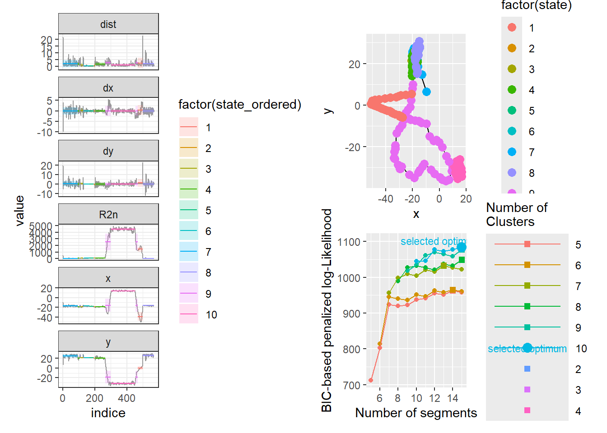
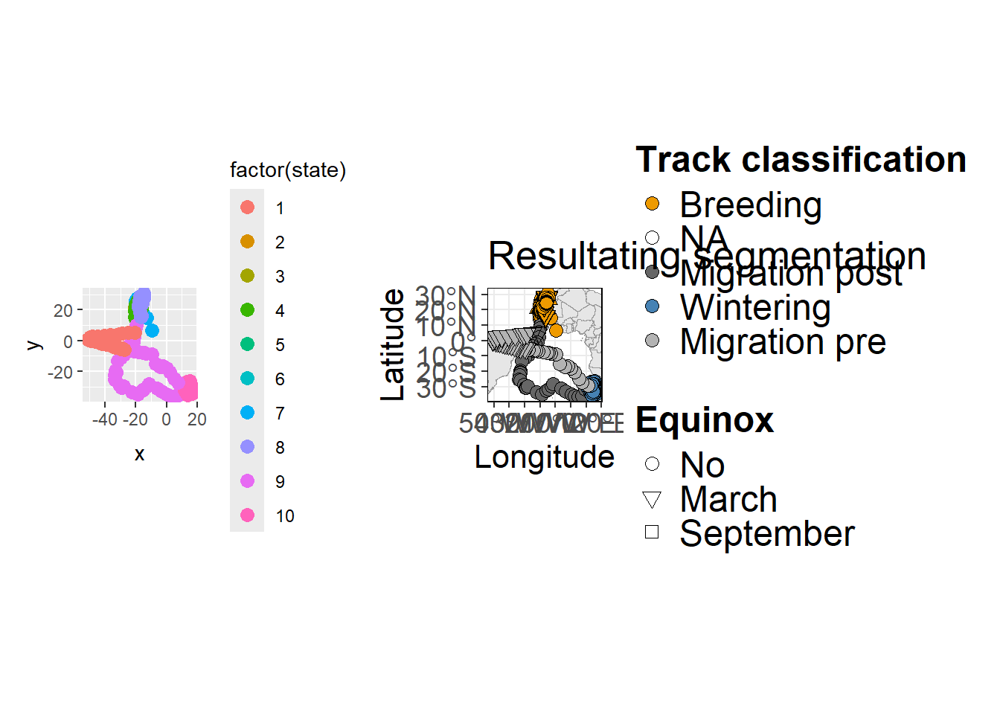

pacman::p_load('devtools',
'tidyverse', 'plyr', 'lubridate', 'readxl', 'readr', # data carpenter
'sf', 'spData', # spatial data
'adehabitatHR', # migrate behaviour and kernels
'segclust2d', # spatial segmentation and clustering
'units',
'ggplot2', 'ggpubr', 'ggspatial',# plots
'patchwork', 'cowplot', # composing plots
'caTools'# runmean and runmin calcs
)Automated migratory classification
1. Introduction: segmentation and clustering migration behaviours
2. Load packages and functions
Every time we do not need to install and load packages from GitHub or other external repository, we use pacman function. For the following code, we need two main packages adehabitatHR and segclust2d packages
We also load own functions, specifically designed for working with GLS data.
source('functions/02_FUNCTIONS_automated_phenology.R') 3. Load tracking data and metada
mdata3 <- read_csv('input/GLS.files3.csv', col_names = TRUE)
# dataset <- 'v1'
tracks <- read_csv('output/Raw_SGAT_tracks_tol_cdays.csv', col_names = TRUE)4. Defining trajectory metrics
We define the trajectory metrics that we will use to classify the migratory behaviour of the individuals. Algorithm use straightness, sinuosity and vector angle as defect, and it is suported in other accesorial variables that can refine the classification.
# Define the non-paired metrics
add.m <- c("mu.dist", "sd.dist", "Emax", "sq_disp", "R2n_sd", "dc_mean", "dc_sd")
# Paired metrics
pair.m <- list(
mu_xy = c("mu.x", "mu.y"),
sd_xy = c("sd.x", "sd.y"),
mu_dxy = c("mu.dx", "mu.dy"),
sd_dxy = c("sd.dx", "sd.dy")
)
# Create a list of all metrics groups (paired and non-paired)
add.metrics <- c(names(pair.m), add.m)4. Classification of tracking data
We will work again through a loop.
4.1. Read track information
i= 1
info<- mdata3[i,]
ring<- info$Ring # individual
sp <- info$Sp # species
geoID<-info$geo_alfanum # Which GLS is processing
geo_trip<-info$geo_trip # which GLS trip is selecting
# Colony info
col.name <- info$Colony
col.lon = info$Colony.lon
col.lat = info$Colony.lat
track <- tracks%>%
filter(geo_trip == .env$geo_trip)
start_year <- year(track$Date_Time[1]) #Trip start
end_year <- year(track$Date_Time[nrow(track)]) #Trip end
cat('Processing geo (', i,') ', geo_trip, 'since', start_year, 'to', end_year,
' from ', col.name, '\n')Processing geo ( 1 ) 11001001 since 2002 to 2003 from Veneguera 4.2. Prepare track to be segmented
Segmentation and clustering by segclust2d package requires:
Trajectory class object
Avoid low variance segments
Additionally, if we are managing GLS data, we have to ensure first position is at the colony. In that way, we use Net Squared Colony Distance (NSCD) instead of Net Squared Distance (NSD).
Convert to trajectory class
# Trajectory format
# R2n = the squared net displacement between the current relocation and the first relocation of the trajectory (NSD)
ltraj <- as.ltraj(xy = as.matrix(track[,c('lon','lat')]),
date = track$Date_Time,
id = track$geo_trip)
track_df <- ltraj[[1]]Transforming into ltraj object, we can get two things at once: (1) x and y columns as coordinates of the track and (b) several movement metrics can be useful for segmentation, clustering and classification of the segments.
Cleaning tracking data for segmentation and clustering
# Determine if there are movement during equinox days
# Select equinoxes
Sep_eq <- as.Date(paste0(start_year, '-09-21'))
Mar_eq <- as.Date(paste0(end_year, '-03-21'))Optionally we can remove colony days if they cause low-variance segments that segclust function cannot handle.
First, we remove erroneus positions, where the distance among them is too large. Then, we remove possible pseudo-duplicates, low-variance segments, that can be caused by the modelling of positions along the equinox periods, the correction of the positions along colony days or another reason that cause > 4 consecutive positions with the same coordinates.
# Clean erroneus positions
track_df2 <- clean_positions(data = track_df, dist_threshold = 40)
track_df3 <- remove_duplicates(data = track_df2, equinox_days = 20,
# cdays = cdays,
Sep_eq = Sep_eq, Mar_eq = Mar_eq, dup_threshold = 4)Other duplicated latitudes has been removed 4.3. Segmentation and clustering
mode_segclust <- segclust(track_df3,
Kmax = 15,
lmin = 5,
ncluster = 5:10,
seg.var = c('x', 'y'),
order.var = 'x',
diag.var = c('dx', 'dy', 'R2n', 'x', 'y', 'dist'),
subsample = F)
# Results of segmentation/clustering
bic <- BIC(mode_segclust)
bic_max <- bic %>% filter(BIC == max(BIC))
# Number of segments
nseg <- bic_max$nseg
# Number of clusters
ncluster <- bic_max$ncluster
# Plots
segclust_plot <- plot(mode_segclust) # variables distribution
map_seg <- segmap(mode_segclust, pointsize = 3,
coord.names = c("x","y"), interactive = F)
bic_plot <- plot_BIC(mode_segclust)
segclust_plot + (map_seg / bic_plot)
4.4. Segments classification
The idea behind this part of the procedure is that there are three migratory behaviours: (1) breeding, (2) wintering and (3) migration. Breeding and wintering are stationary behaviours, meanwhile wintering and migration are non-breeding behaviours. Stationary segments can be defined by low straightness and mean angle vector, and high sinuosity values; in turn, non-breeding segments can be characterize by high NSCD values.
Therefore, a double hierarchical clustering is performed by segment_class function. And this clustering is performed repeatedly per every possible combination of metrics we use. Each classification resulting is given a confidence value. The best classification of the segments is selected by the highest confidence value.
Following functions, segment_class and segment_correction, get two thing to refine the resulting classification:
- Indicate segments that match with equinox periods. Additionally, these segments get reduced the confindence value.
- Correct miss-classifications. The function check some especific cases where the algorithm can fail and it review the correct classification to give to each segment.
# 7. Re-classification of the segments ####
# Segments' reclassification to infer biological meaning
# segs <- segment(mode_segclust)
segments1 <- segment_class(mode_segclust = mode_segclust,
option.by = 'seg',
add.metrics = add.metrics,
col.lon = col.lon,
col.lat = col.lat)
# Equinox correction
segments2 <- equinox_interference(df_seg = segments1$df_clust,
track = track_df3,
Sep_eq, Mar_eq)
segments3 <- segment_correction(df_seg = segments2)
segments3 <- segments3 %>%
mutate(
Check = case_when(
Confidence < 2 ~ 'Check',
Confidence >= 2 & Eq & !(row_number() %in% c(1, n())) &
(lag(Breed) != Breed | lead(Breed) != Breed) ~ 'Check',
TRUE ~ 'Ok'
)
)
segments3 <- cbind(ID = geo_trip, Sp = sp, segments3)
# Summary of segmentation/clustering information
seg_df <- data.frame(Ring = ring, Sp = sp, Colony = col.name,
ID = geo_trip,
n_seg = nseg, n_cluster = ncluster,
Breed_class = paste(segments3$Breed, collapse = '-'),
n_seg_B = length(segments3$Breed[segments3$Breed == 'B']),
n_seg_mig = length(segments3$Breed[segments3$Breed == 'mig']),
n_seg_W = length(segments3$Breed[segments3$Breed == 'W']),
Confidence_0 = mean(segments2$Confidence, na.rm = T)/3,
Confidence = mean(segments3$Confidence, na.rm = T)/3,
Metrics = paste(segments1$metrics, collapse = '-')
)4.5. Assignation migratory behaviour to each track position
After the classification each segment in each respective behaviour, we assign this behaviour to each positions inside the segment. Also, we differenciate between post-nuptial migration (mig1) and pre-nuptial migration (mig2); and breeding pre-migration (B1) and post-migration (B2).
# Resulting data.frame
track_df4 <-segclust2d::augment(mode_segclust)
track_df5 <- track_df4 %>%
# Join Breed to hole track
mutate(
Breed = pmap_chr(
list(date = date),
~ {
idx <- which(segments3$f_day <= ..1 & segments3$l_day >= ..1)
if (length(idx) > 0) {
segments3$Breed[idx[1]]
} else {
NA_character_
}
}
)) %>%
distinct() %>%
add_column(ID = geo_trip) %>%
dplyr::select(ID, everything()) %>%
mutate(Breed2 = case_when(
Breed == 'mig' & cumsum(replace_na(Breed == 'W', FALSE)) > 0 &
rev(cumsum(rev(replace_na(Breed == "W", FALSE)))) == 0 ~ 'mig2',
Breed == "mig" & rev(cumsum(rev(replace_na(Breed == "W", FALSE)))) > 0 ~ "mig1",
TRUE ~ Breed
)) %>%
mutate(Equinox = ifelse(
date >= (as.Date(Sep_eq) - days(20)) &
date <= (as.Date(Sep_eq) + days(20)), 'Sep',
ifelse(
date >= (as.Date(Mar_eq) - days(20)) &
date <= (as.Date(Mar_eq) + days(20)), 'Mar', 'No'
)
))4.6. Plotting results
We can plot the results of the procedure in different ways thanks to plot_segmentation function. We can plot segmentation and clustering plot, segmentation and clustering map, phenology map and error index plot. This last plot plot the mean of the variables segmented of each segment, as coordinates and add error bars as the SD of these variables.
plot_list <- plot_segmentation(segclust = segclust_plot, map = map_seg,
segclass = segments3,
col.lon = col.lon, col.lat = col.lat,
breed = T, data = track_df5,
world = world)
# plot_save <- plot_list$segclust | (plot_list$map / plot_list$segclass) | plot_list$breed
plot_save <- plot_list$map | plot_list$breed
plot_save
When we are working in loops we can save the results of segmentation and migration behaviour classification in a list
# Segments
seg.list[i] <- list(segments3)
# Summary of segmentation/clustering
seg.list2[i] <- list(seg_df)
# Track with phenology classification
tracks_list[i] <- list(df_trip5)5. Saving results
write.csv(seg_all, file = 'Segmentation_results.csv')
write.csv(seg_all2, file = 'Summary_segmentation.csv')
write_csv(track_all, file = 'Phenology_tracks.csv')